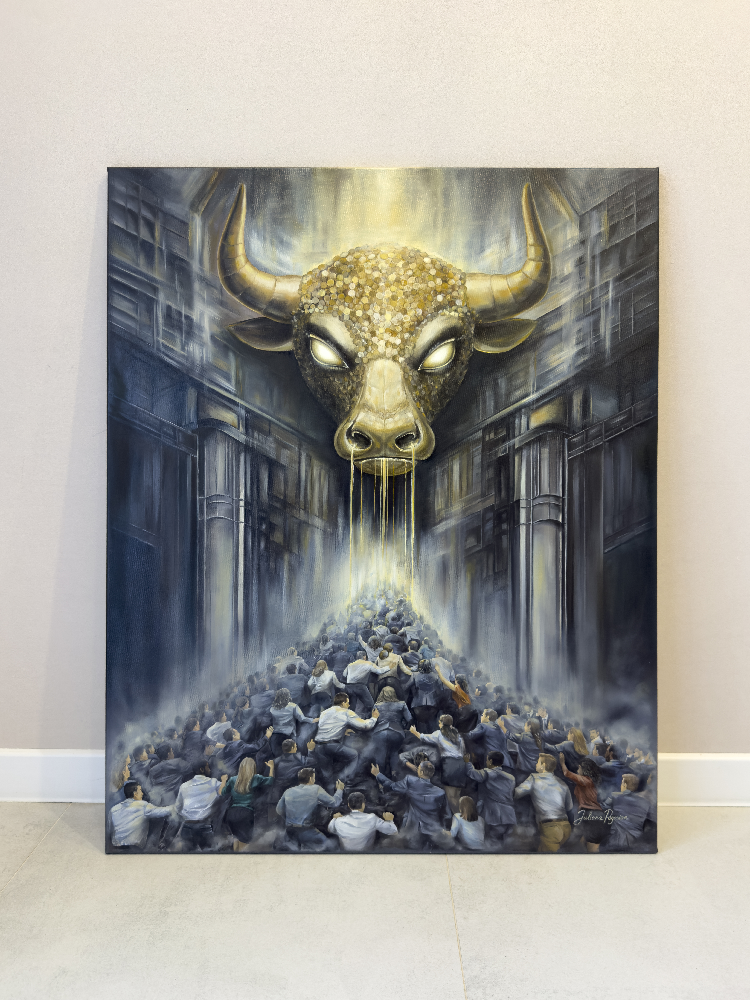

Behind the Painting
The idea for The Golden Calf began with a question: what happens when money becomes more than a tool and turns into something people organize their lives around?
I developed the composition around the contrast between a monumental golden bull and a crowd moving toward a distant light. I wanted the bull to dominate the space, while the people below it would form a powerful, almost unstoppable movement. The architectural setting creates a sense of scale and confinement, making the scene feel like a system from which it is difficult to step outside.
Working in oil on canvas allowed me to build the image gradually through layers of colour, light, shadow, and texture. The gold surface was particularly important: I developed it through many small, coin-like marks, giving the bull a material presence that connects it directly to the idea of wealth.
For me, this painting is not simply about money. It is about the power of an idea to shape collective behaviour — and about the human cost that can remain hidden behind the promise of success.
The Painting Process
The process of creating The Golden Calf.

The Golden Calf — the finished painting on canvas.
Details of the Painting
The Golden Bull
The Crowd